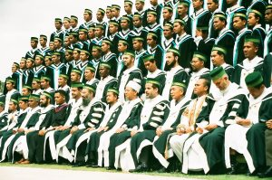
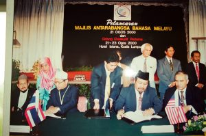
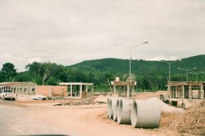
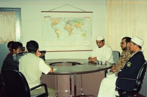
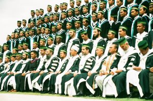
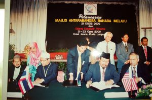
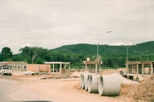
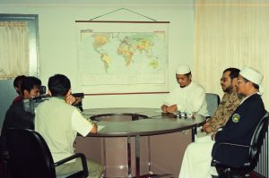
 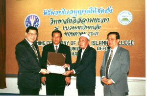
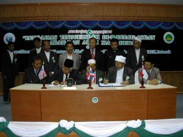
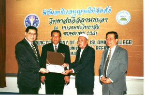
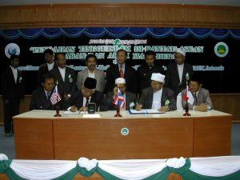
The idea of creating a higher Islamic institution in Thailand was born out of a group of students pursuing a master's and doctoral degree in Saudi Arabia. Mr. Isma'a Ali, Mr. Abdulhaleem Saising. Mr. Jihad Buongtayong Mr. Ahmad Umar Chakraborty, who sees the need for Islamic higher education institutions to do their part in producing graduates with moral knowledge. This will be the cornerstone of the country's development towards prosperity and peace and peace with the will of Islam. After collecting about one million baht. In 1983, the funds were returned to Thailand and a committee was formed, called the "Southern Private Islamic College Extension Committee". After considering the suitability of the project location, the committee decided to purchase land totaling 70 rai and 32 sq.wah at Ban Sorong. Moo 3, Khao Tum Subdistrict, Yarang District, Pattani Province, to be the place where the college was founded. In 1989 , the construction of the Institute of Advanced Islamic Studies was completed, comprising school buildings and administrative offices, mosques, libraries, teachers' dormitories, student dormitories, and utilities, but the project's operations from 1989-1996 were delayed due to lack of staff and budget in April. 1998.1998.1.1.1.1.1.1.1.1.1.1.1.1.1.1.1.1.1.1.1.1.1.1.1.1.1 By the recommendation of the Board of Private Higher Education Institutions. It allowed the Southern Islamic Higher Education Foundation to establish a college-type higher education institution, called "Yala Islamic College", pursuant to license No. 4/1998. In the same year, the University Council passed Order No. 114/1998 appointing the first members of the Yala Islamic College Council, and the Yala Islamic College held its first meeting of the College Council on the same 27 months, with the meeting approving the appointment of The Rev. Muhammad Noor. Mata He served as president of the College Council, Mr. Ari Wong Arya served as vice president. Dr Ismailutfi Japagiya is the bishop. Dr. Ahmad Umar Japakia served as Vice-Chancellor for Academic affairs and Student Affairs, and Mr. Muslan Mahama served as Secretary of the College Council
in August 1998
. Law and Philosophy Religion and History Come to the college to consider the potential, readiness and suitability
of sharia and Uzuluddine majors. The university has approved the Yala Islamic College to operate both programs in
the same year, and it is open to 100 first-generation students in both disciplines. To officially
announce the establishment of the first private higher education institution in Thailand in 2000
with the coordination of Sheikh Abdullah Binmad. Al-Yalaley, King of Hamdha bin Khalifah. Alsani, the President of
the Foundation for Southern Islamic Higher Education, informed him that he wished to donate 43,000,000 baht
(forty-three million baht) to finance the construction of the bishop's office building and the combined school
building, as well as the necessary utilities.
As a result of efforts to improve the quality of the college's educational management, the college's location is limited in terms of expansion. To this end, the board of trustees conducted a review of the premises for the college expansion, with a resolution to use the land purchased at the beginning of the first project to support the college's expansion. On September 10, 2000, the Southern Foundation for Higher Education held a foundation stone laying ceremony for the construction of the Bishop's Office building and the consolidated school building at the University Town Establishment Project, Ban Sorong. Khao Tum Subdistrict, Yarang District, Pattani Province, under the help of the king. Hamd bin Khalifah Alpsani of Qatar, with Mr. Wan Ahmad Panakaseng. The president presided over the ceremony, dr. Ismail Lutfi Japagiya, bishop of the college. The Yala Islamic College Board of Trustees, the Yala Islamic College Executive Director, faculty, students, community leaders, honored guests and locals from nearby witnessed more than 200 people.
On September 28, 2003 , Yala Islamic College used the newly established facility to hold a graduation ceremony for graduates in the 2002 academic year, the first of its kind, with 249 graduates from three disciplines, namely Sharia. Mr. Swasdi Sumalayasak presided over the ceremony on March 10, 2004
In June 2007 , Yala Islamic College was granted permission to change its name and category. The name and category was changed to "Yala Islamic University" in accordance with license No. 5/2007 dated June 14, 2007, and on June 27, 2007, the Minister of Education honored the licensing ceremony and opened the Yala Islamic University badge, simultaneously holding a ceremony to award an honorary Doctor of Arts degree to Prof. Dr. Abdullah bin Al-Muhsin Attire. Secretary-General of the Muslim World League
On October 31, 2013 , Yala Islamic University was granted permission to change its name to Fatani University, dated October 31, 2013, issued by the Ministry of Education . Fatani University, in the Gazette.